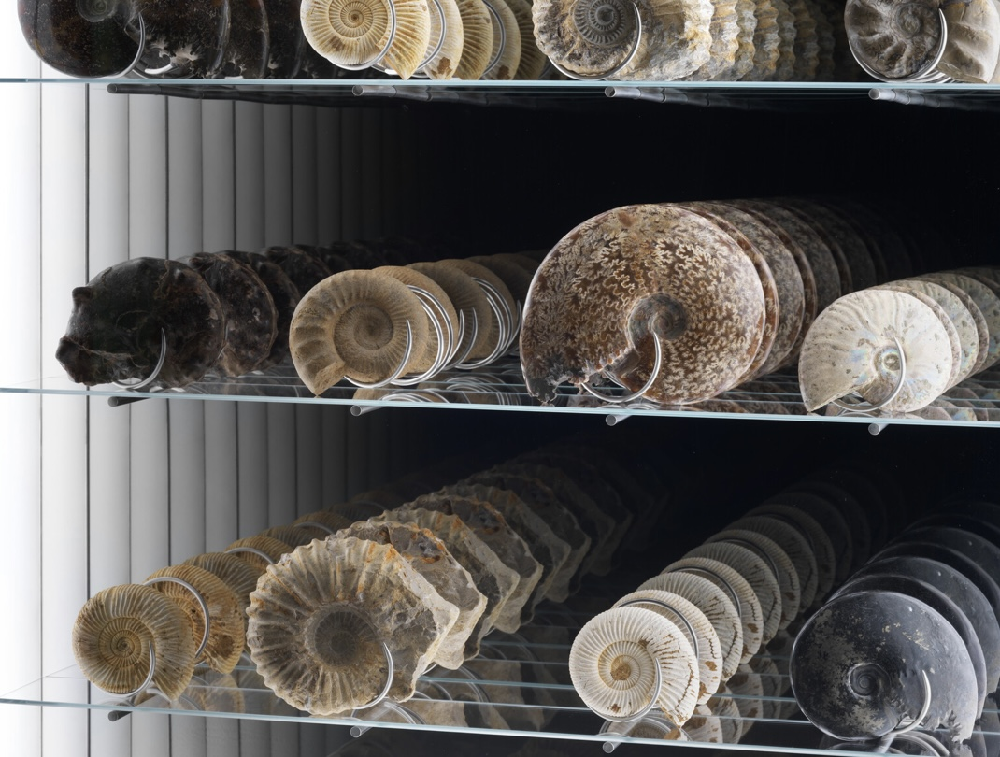
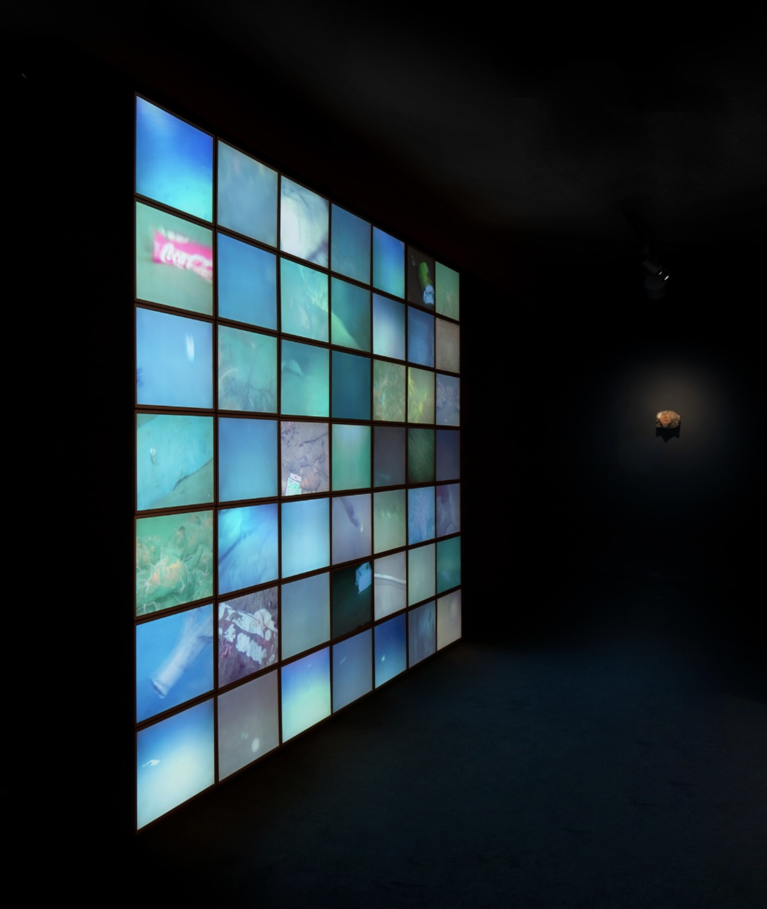
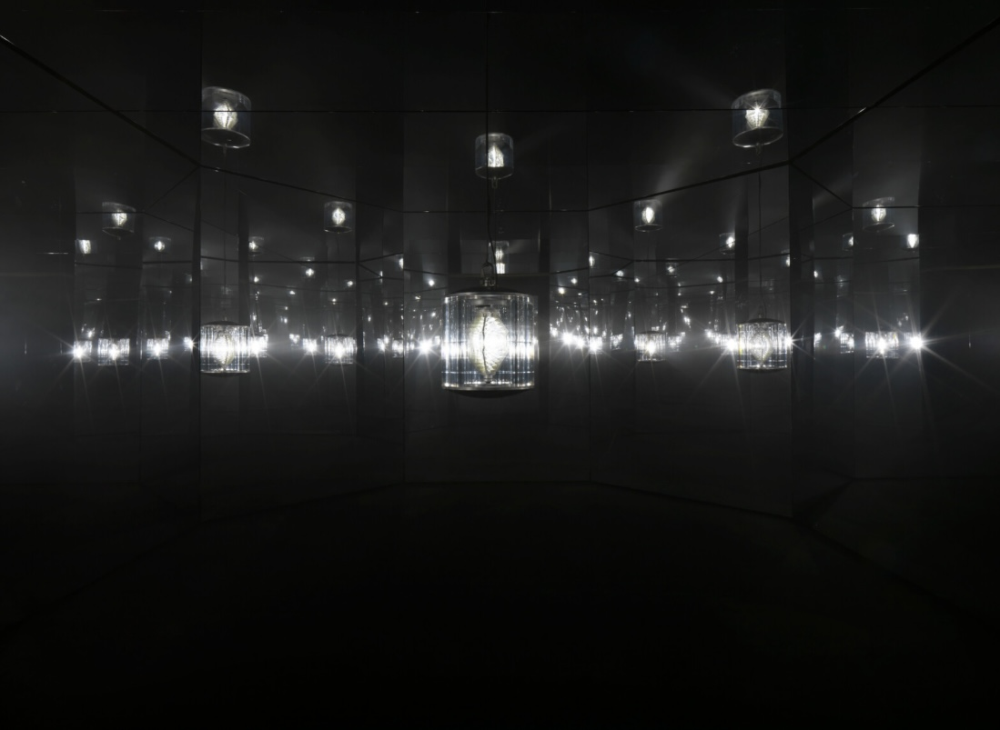

Finde deine Stimmung im Meer. Je tiefer du gehst, desto dunkler wird es.
Du betrittst die Ausstellung. Du bist von Bildern umgeben, wo die Menschen draufstehen. Diese Serie von Bildern heißt "Where the Waters meet". Betrachte diese Werke und stell dir vor, alle Menschen wären verschwunden. Wie wird es jetzt wirken? Würden die Werke noch dieselbe Geschichte erzählen?

Du gehst weiter den dunklen Flur entlang. Neben einer Liege befindet sich eine beleuchtete Vitrine. Da drinne sind verschiedene Muscheln platziert. Vergleiche die Muscheln. Welche davon ist am auffälligsten für dich? Zeichne die.

Nun siehst du eine Collage mit einem provokanten Namen "The Gods must be crazy". Betrachte jedes Bild genauer. Wie wirkt die Collage auf dich? Wirkt sie anders als ein einzelnes Bild? Was kann der Name bedeuten?

Plötzlich stehst du in einem Raum mit Spiegeln. Im Gegensatz zu der dunklen Ausstellung davor, ist dieser Raum sehr hell. Welches Gefühl löst er in dir aus? Durch welche Mitteln wird dieses Gefühl erzeugt?
Du findest einen Brunnen. Statt Wasser, fließt da Feuer. Vermute, warum der Künstler mit Feuer statt Wasser arbeitet.
Jetzt kommst du in einen hellen, weißen Raum. Wähle ein Kunstwerk aus, in dem das Zusammenspiel von Mensch und Natur deutlich wird. Beschreibe deinen Eindruck in drei Ebenen (Ich sehe, ich vermute, ich empfinde) und unterscheide dabei zwischen Beobachtung und Interpretation. Ordne anschließend das Werk auf der Skala zwischen Mensch und Natur ein und begründe, wer deiner Meinung nach die entscheidende Rolle im Bild spielt.
In dem zweiten Stock findest du einen Fernseher und viele Sitzsäcke. Jetzt kannst du dich ausruhen und das Leben unter dem Wasser beobachten.
Lass dir Zeit. Du musst hier nichts beantworten.